Making outdoor advertising verifiable
Independent, on-ground proof for outdoor campaigns, captured by a distributed rider network. I was the solo designer behind the rider experience, from core flow to V1, validation, V2 and production handoff.
Solo designer at LOCAD. Flow, V1, testing, V2, handoff.
Vendors owned the sites and the monitoring. Brands had no neutral proof.
A rider network capturing GPS-tagged, timestamped, live-capture proof.
Beta in Delhi NCR; rider model extended to West Bengal.
Design GPS edge cases earlier, test in the rider's context, define success metrics before iterating.
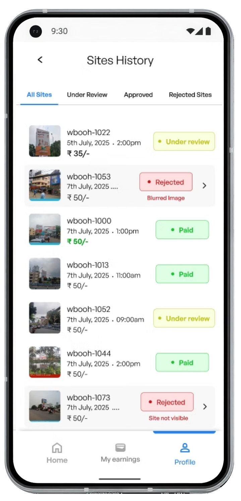
Deep dive — open any section
01What is LocEarn?
+
LocEarn connects brands running outdoor advertising campaigns with people on the ground who can verify those sites. Riders visit assigned locations, capture real-time proof, and get paid for verified submissions, giving brands visibility into what's actually happening.
My role
Solo designer. I shaped the rider experience: core flow and product decisions, V1, validating it with riders, iterating, and working with the tech team through production.
The goal
Make campaign verification more reliable and scalable. Brands get trustworthy proof from the ground and can spot issues while the campaign is still running, not after the money is spent.
02Brands had no independent view of the ground
+
Vendor-controlled verification
The same vendors who owned the ad sites also handled monitoring.
Predictable inspections
Vendors knew when sites would be checked. They could prepare or alter them.
Lack of independent proof
Brands had no neutral way to verify what was actually happening.
How might we help brands get reliable, on-ground proof at scale? The challenge was a simple enough experience for riders to consistently find, complete and submit verification tasks.
As a brand
“I want independent, real-time proof that my campaigns are live, so I can take action if there are any issues.”
As a rider
“I want to find nearby tasks, know exactly what to do, complete them quickly and get paid without any hassle.”
03Who can verify sites without the vendor knowing?
+
We needed independent verification that could scale city by city.
Use the vendor network
Vendors are the exact problem brands are trying to escape. Having them verify their own work defeats the purpose.
Same trust problemHire field agents
Full-time staff in every city would cost crores before a single brand signed on.
Too expensivePartner with delivery companies
Dependent on third-party contracts, availability windows and pricing. Too slow to scale.
Not scalableEveryday people, incentivised
Thousands already move through these cities daily. They just needed a reason to stop and look. We created that reason.
We chose this · 400+ riders via Instagram & Facebook ads04The product had to earn trust before asking for effort
+
A rider had never heard of LocEarn. Before asking them to spend their time, we had to make the offer feel credible and worth their effort.
Show value before commitment
“Why should I trust this?”
Help riders quickly understand what LocEarn is, how it works and what they can earn.
Transparent value
“Is this actually worth my time?”
Before booking, riders see the reward, location and task details with no hidden surprises.
Confident first task
“Can I actually do this?”
Show key details like reward, distance and site before they commit.
Proof through payout
“Will I actually get paid?”
Weekly payouts create the first real proof that the platform is genuine.
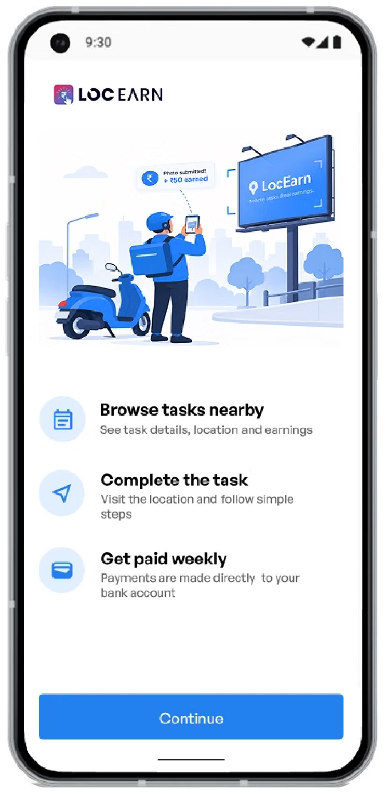
05Same proof engine, different users
+
We reused our existing product's photo verification. Our job wasn't building the proof system. It was making it work for people who had just seen an Instagram ad.
Right place
GPS confirms the photo was taken at the exact contracted site.
Right time
Timestamped at capture. No backdating.
Can't be staged
Gallery upload blocked. You show up or you don't submit.
06We built V1 quickly, then put it in front of riders
+
We went straight into high fidelity to align stakeholders, then tested the prototype with riders from our existing network, in the office. Their feedback exposed gaps we couldn't see from the screens alone.
How do I get there?
Right action at the right time, with a clear arrival time and easy access to maps. Faster decisions, less uncertainty.
What do I need to do?
A simple step-by-step flow to capture proof and complete the task. Easier to complete, especially on the move.
Is it worth it?
Reward and distance upfront, so riders can decide quickly if a task is worth their time and travel.

Proof had to be trustworthy
Location, timestamp and live capture were already part of the system.
Riders are often on the move
They could be travelling to a site and checking the app in between.
Every task has a deadline
Riders needed to reach the site within the allotted time.
Trust starts before the first task
New riders spend their time and fuel before they know if it's worth it.
07Four friction points in the rider journey
+
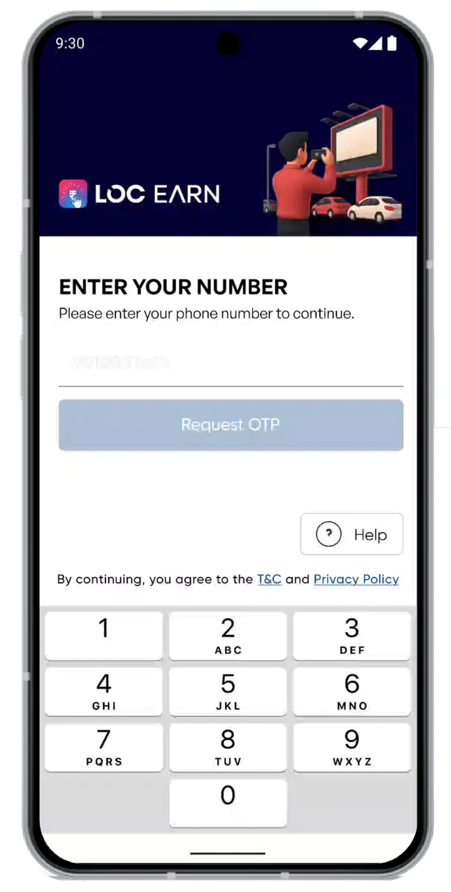
“ltna personal information kyun chahiye?”
Why do you need so much personal information?“Preferred cities aur permissions abhi kyun select karna hai? Pehle kaam dekhne do.”
Why do I have to select preferred cities and give permissions now? Let me see the tasks first.“OTP aane mein bahut time lag raha hai.”
The OTP is taking too long to arrive.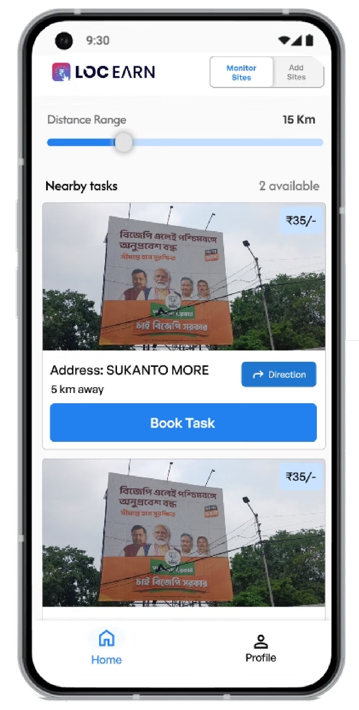
“Pehle direction loon ya task book karoon?”
Should I check the direction first or book the task?“Mujhe bas paas ke tasks dekhne hain, range samajhna thoda confusing hai.”
I just want nearby tasks; the range is a little confusing.“Iss page pe direction kyu dikha rahe? Aur dono buttons ka color bhi same hai.”
Why are directions shown on this page? Both buttons are the same colour too.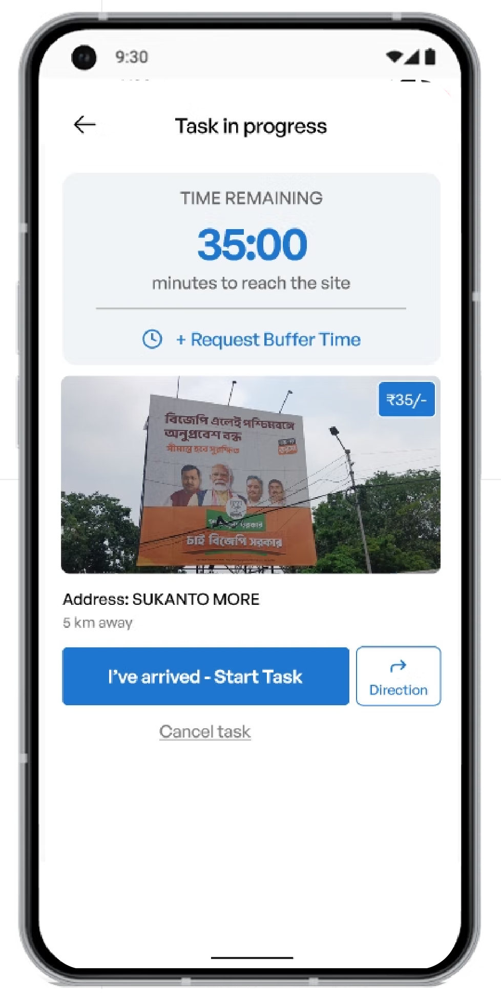
“Abhi mujhe kya karna hai? Direction loon ya task start karoon?”
I'm not sure what I'm supposed to do now. Should I get directions or start the task?“35 minute bache hain, par mujhe kitne baje tak site pe pahunchna hai?”
It says 35 minutes remaining, but by what time do I need to reach the site?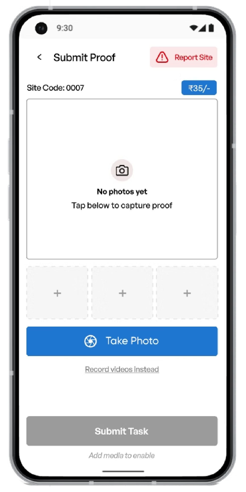
“Photo lene ke liye exactly kahaan tap karna hai?”
Where exactly do I tap to take the photo?“Mujhe bas site ki photo leni hai, itna sab kyun dikh raha hai?”
I just need to take the site photo, why is there so much on the screen?“Report site bhi tha kya, mujhe toh dikha hi nahi.”
I totally missed that there is a 'Report Site' option.Unclear time expectations
The countdown didn't answer “when do I need to arrive?”
Unclear next action
Riders weren't sure what to do next.
Proof & reporting felt disconnected
Capture and reporting actions competed for attention.
Onboarding asked too much
Too much information before seeing tasks.
08From more information to one action at a time
+
Let riders see the value before asking for commitment
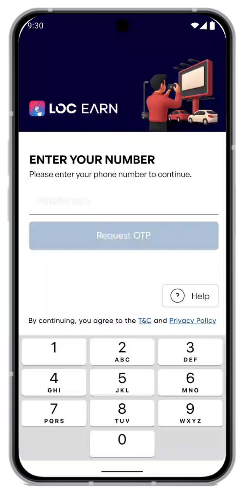
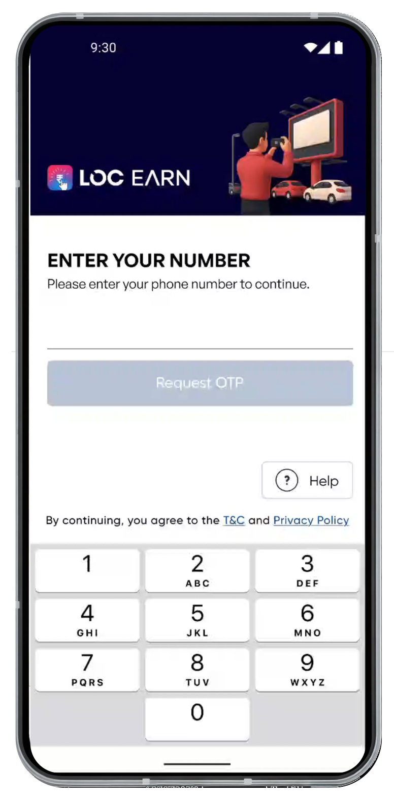
Make the decision easier before the rider starts travelling
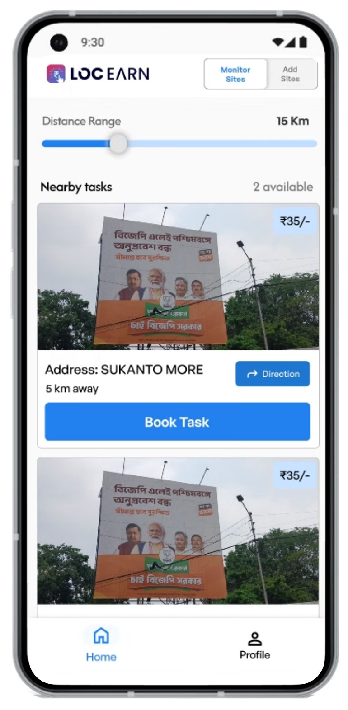
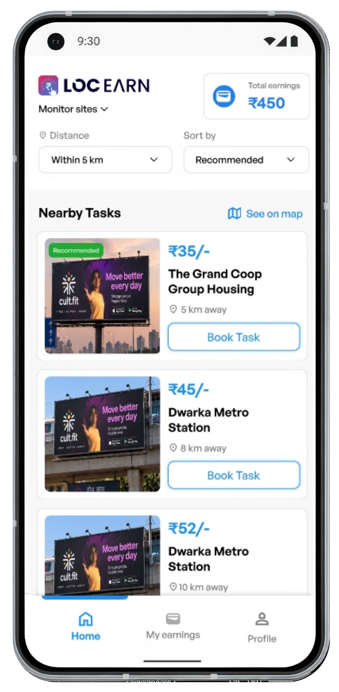
The action changed with the rider's state
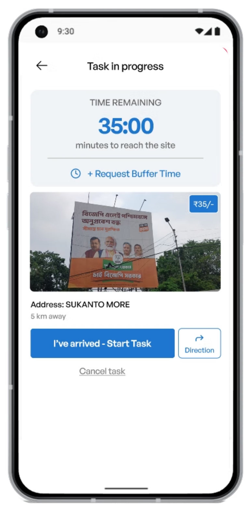
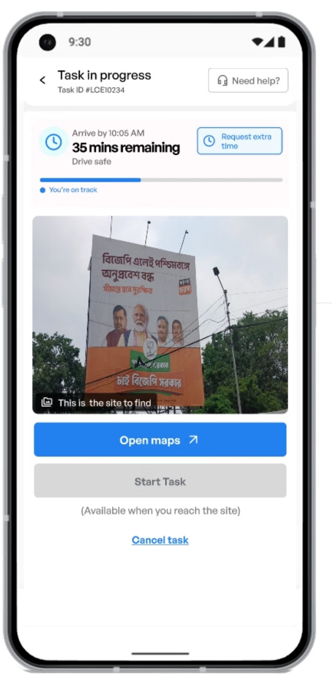
Make the proof submission flow easier to follow
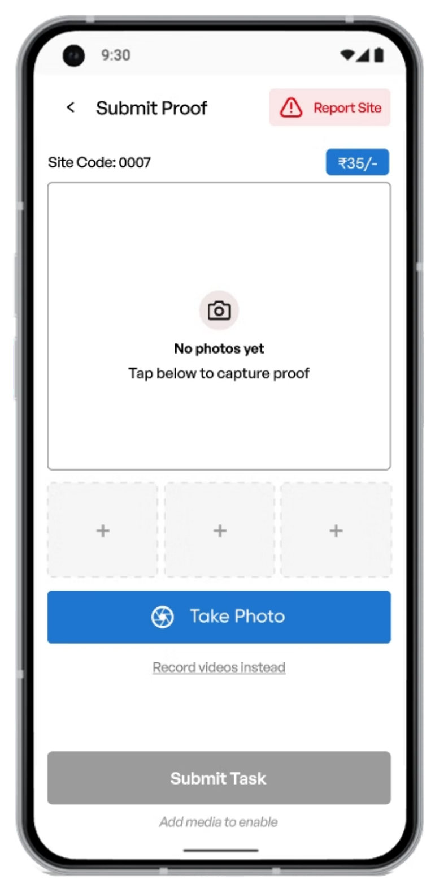
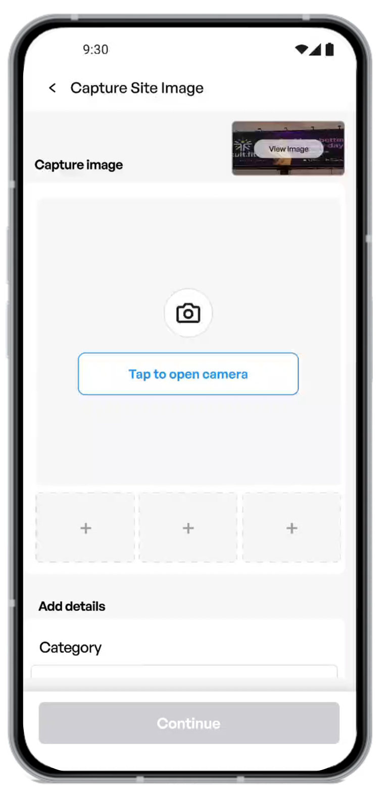
09The shipped rider journey
+
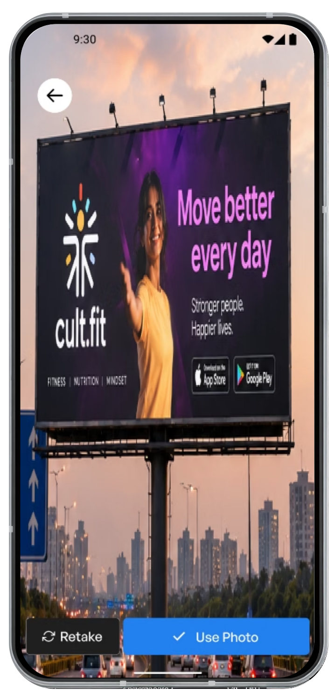
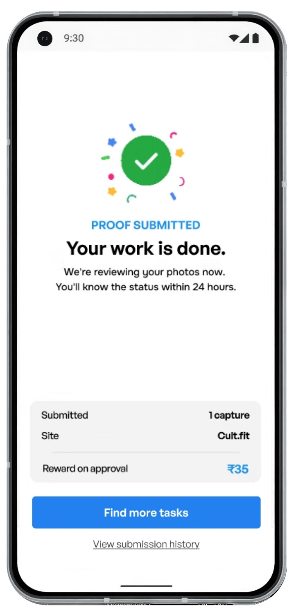
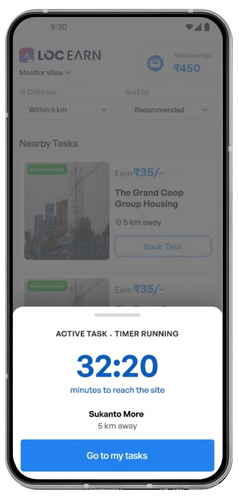
10Beta to real-world deployment
+
The product launched in beta across Delhi NCR before expanding the rider model to West Bengal. Expansion into West Bengal was affected by the state election, which disrupted the planned rollout window.
Riders deployed
Recruited through social ads and onboarded one by one.
Districts covered
A distributed rider network across the campaign area.
Sites monitored
Brands received independent, on-ground verification.
The redesigned rider experience enabled on-ground verification at scale, giving brands an independent way to collect campaign proof.
11What I'd do differently
+
V2 solved the problems we could see. These are the gaps I'd address next.
Design location edge cases earlier
V2 made “Start Task” depend on reaching the site. Next, define what happens when GPS is inaccurate, unavailable, or the rider is there but not detected.
Take testing into the rider's context
Office-based reviews found major issues. Next, test while riders are actually travelling, navigating and completing a task.
Define success metrics before iterating
We drove V2 from feedback but didn't instrument the V1 to V2 change. Next time: time to first task, task completion and onboarding completion, before rollout.